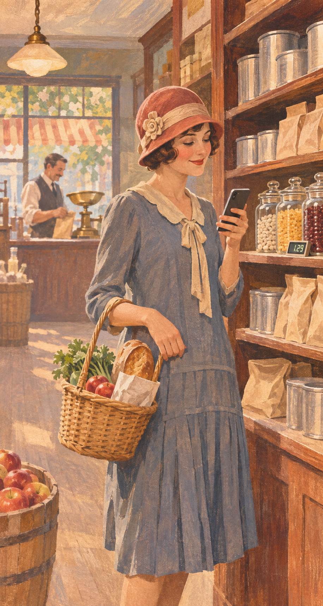
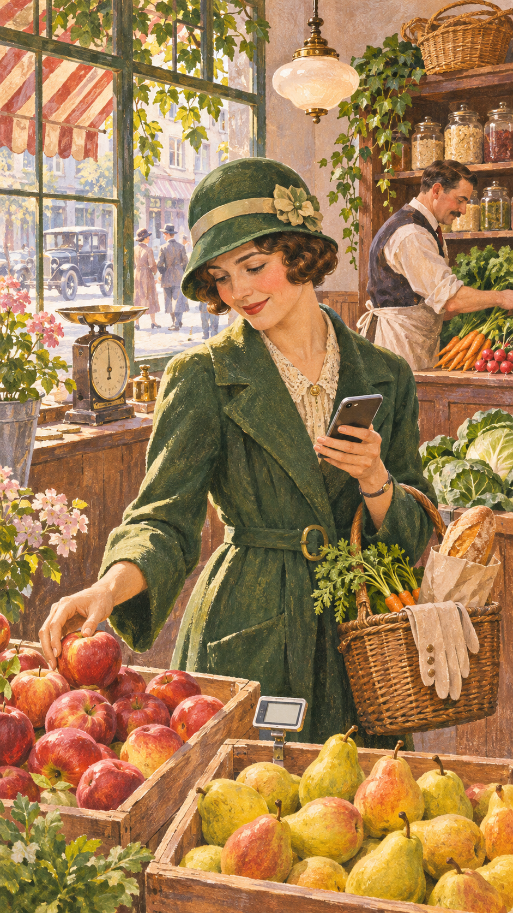
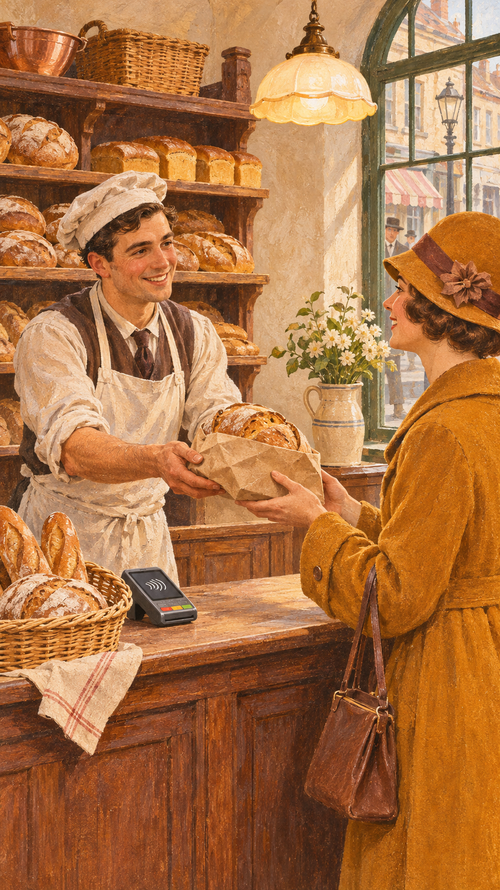
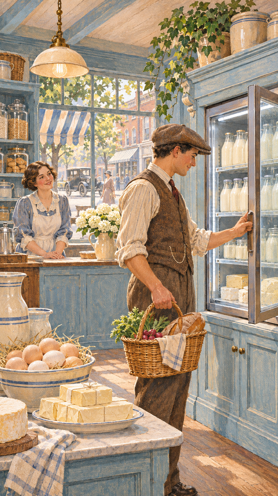
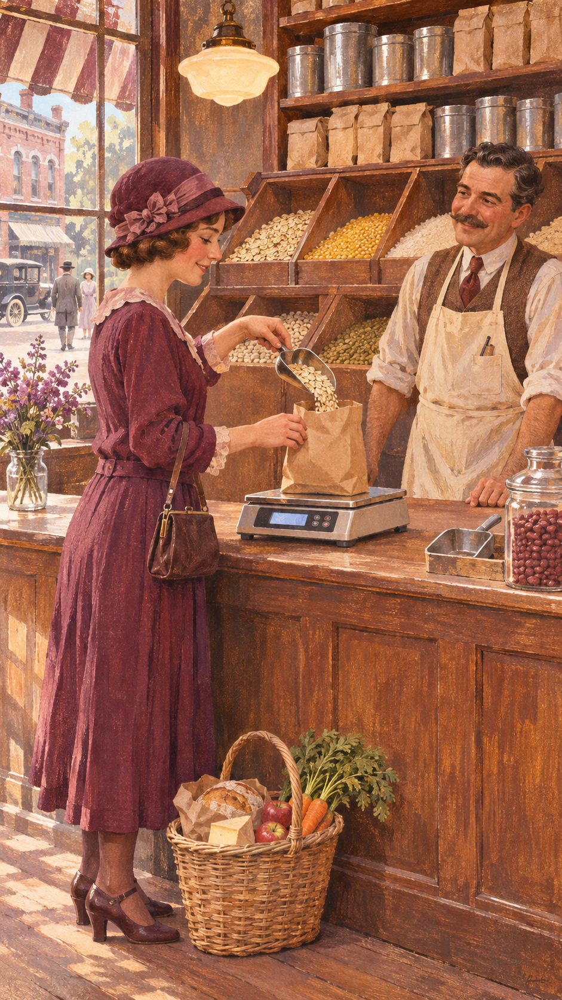
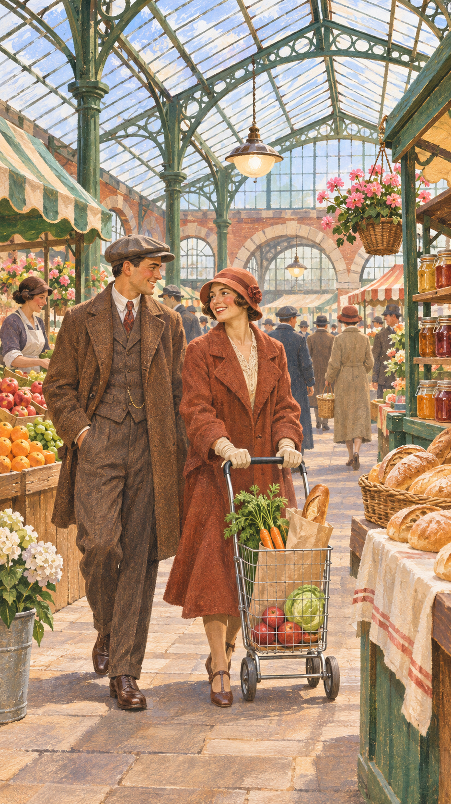
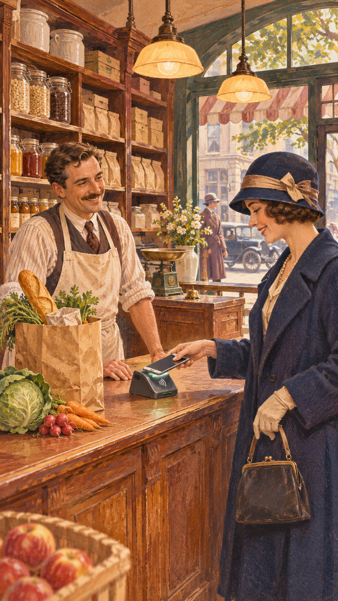
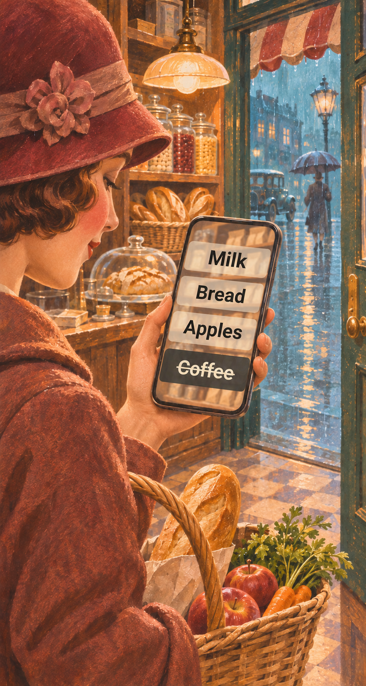
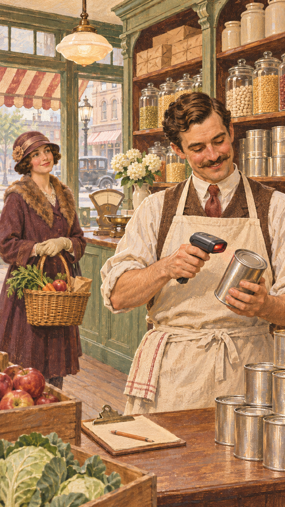
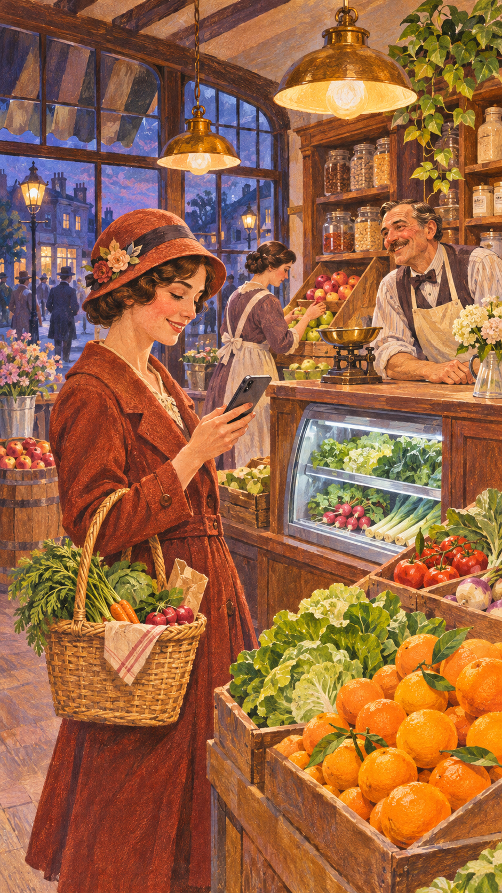

QShopper background choices
All ten selected for QShopper: original 1920s-inspired shopping scenes with subtle modern details. Click an image to view the original PNG; the app uses optimized 1080 × 1920 JPEG exports.




















All ten are included in the app's slideshow. Native PNG dimensions and hashes are in inventory.json; deployment JPEG hashes are in exports.json; exact prompts are in prompts.json.